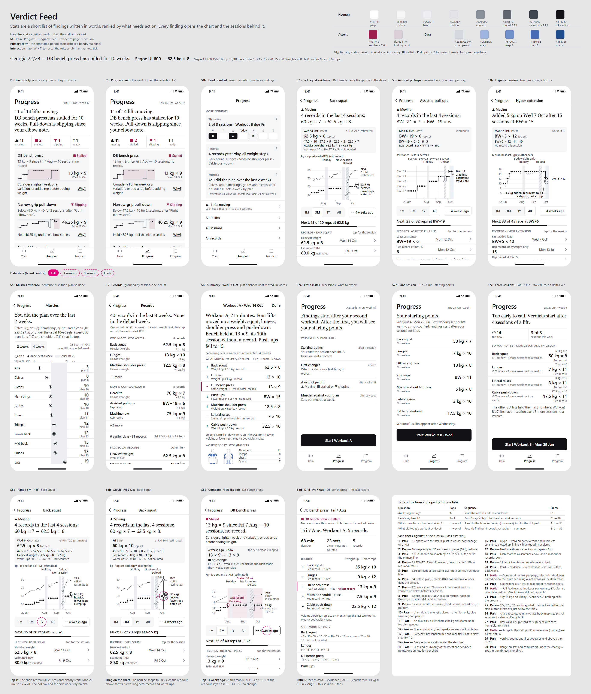
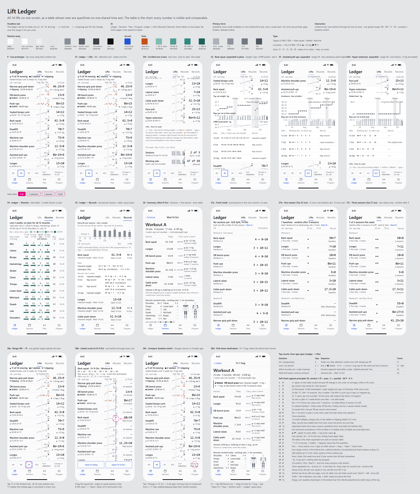
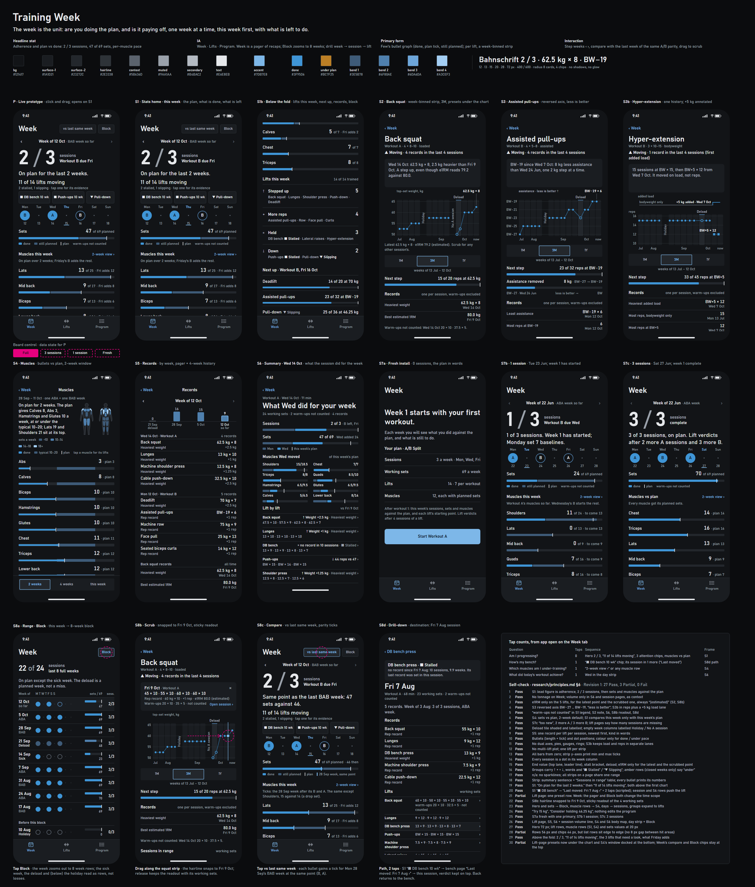
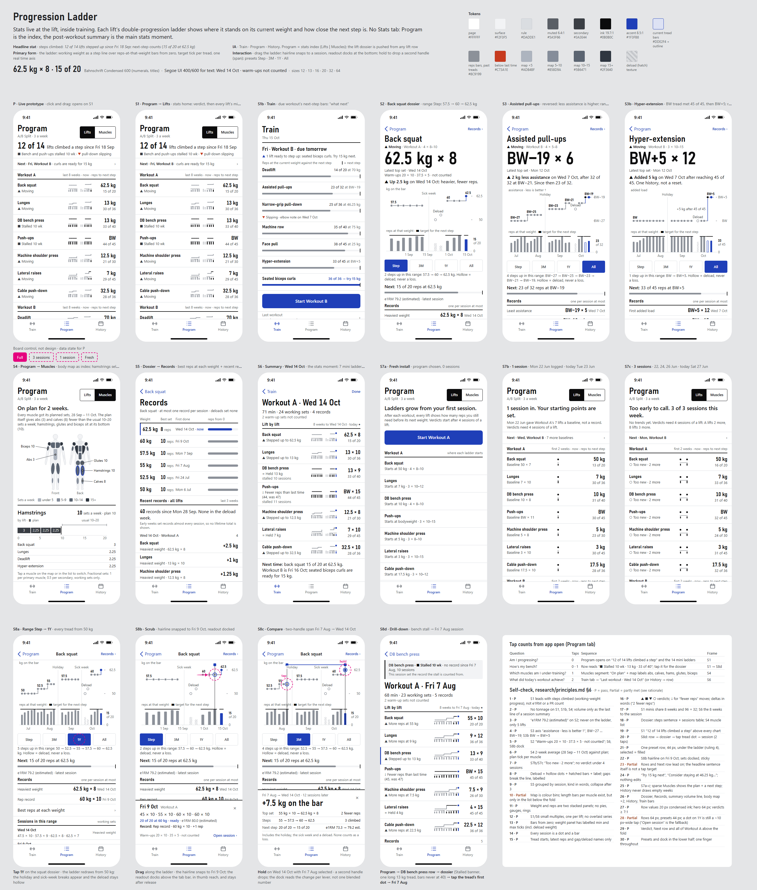

1 · Verdict Feed
Stats as written findings, ranked by what needs action.
- Headline
- "11 of 14 lifts moving. DB bench has stalled for 10 weeks." Counts, then stall, slip and ready cards.
- Where
- A Progress tab. Each card opens an evidence page, then the session.
- Main chart
- One lift over time, with labelled periods (Holiday, Deload, Stalled 10 wk).
- Interaction
- Tap Why? for the rule; a "4 weeks ago" reference; scrub.
- Look
- White, serif headlines (numbers always in the sans), claret only for attention.
- Latest review
- 8 · 8 · 8 · 8 · 8 · 7 · 8 = 55 · checklist 27 / 3 / 0

2 · Lift Ledger
All 14 lifts in one table of sparklines on a shared time axis.
- Headline
- "▲ 11 of 14 moving · ■ 2 stalled · ▼ 1 slipping", then lifts sorted by attention.
- Where
- One Ledger tab (Lifts / Muscles / Records). Rows expand in place.
- Main chart
- Sparkline rows; an expanded row shows weight, reps and e1RM panels.
- Interaction
- One scrub hairline through all 14 rows; a switchable baseline; a bottom control bar.
- Look
- Swiss table, monospace numbers, orange only on stalls, teal muscle ramp.
- Latest review
- 8 · 7 · 8 · 8 · 7 · 8 · 8 = 54 · checklist 26 / 4 / 0

3 · Training Week
The week is the unit: are you doing the plan, and is it paying off?
- Headline
2 / 3sessions, "11 of 14 lifts moving", sets 47 of 69.- Where
- A week pager with recaps; zooms out to an 8-week Block.
- Main chart
- Bullet graphs (done · still planned · plan tick); per lift, a strip binned by week.
- Interaction
- Step through weeks; compare with the last week of the same A/B pattern; drag to scrub.
- Look
- Dark graphite, calm azure and amber. No neon.
- Latest review
- 8 · 7 · 8 · 8 · 8 · 8 · 8 = 55 · checklist 27 / 3 / 0

4 · Progression Ladder
No Stats tab: stats live at the lift, inside training.
- Headline
- "12 of 14 lifts climbed a step since 18 Sep", plus reps to the next weight.
- Where
- The Program list is the index (a mini ladder per lift), then a full-screen page per lift, then the summary.
- Main chart
- Weight steps over reps-to-target bars, with a target tick per weight.
- Interaction
- Readout docked in thumb reach; hold to compare two sessions.
- Look
- Results-board style: condensed tabular numbers, cobalt, calm.
- Latest review
- 8 · 8 · 8 · 7 · 7 · 8 · 7 = 53 · checklist 25 / 5 / 0